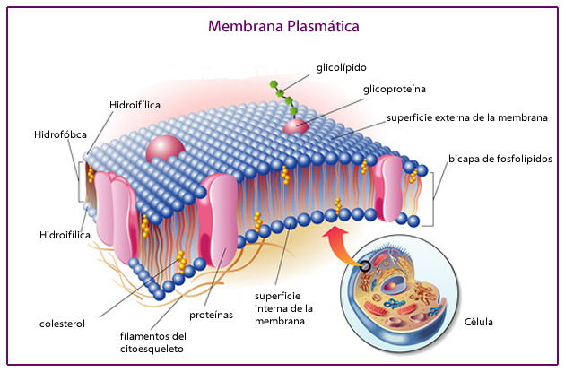

Estructuras y organelos celulares.
Aquí encontraras todos los organelos que componen a la celula y la función que realiza cada uno.

Membrana plasmática: -Se encuentra en todas las células, la delimita, la protege, es selectivamente permeable, elástica y resistente. Poseen proteínas y carbohidratos y se encarga del transporte de sustancias.
-Está formada de una doble capa de lípidos con sus extremos hidrófobas frente a frente y los hidrófilos dirigidos hacia afuera.
Núcelo: -Es una estructura esférica u ovoide que se encuentra solo en las eucoriotas.
-La conforma la membrana nuclear, el nucléolo, y la cromatima.
-Poseen ADN y ARN. Participa en la reproducción y en el control celular.
Citoplasma:-Es un coloide con aspecto parecido a la clara de huevo. Es una mezcla de semilíqueda de agua, azucares, iones y proteínas.
-Le da elasticidad, rigidez, cohesión y contractibilidad a la célula.
Pared celular:-Es una envoltura trilaminar compuesta de celulosa y proteínas.
-Se encuentra solo en células vegetales, bacterias, hongos y algas, en las animales no.
Reticuloa endoplasmico:Sistema de sacos y tóbulos aplanados e interconectados entre si desde la membrana nuclear hasta la membrana plasmática de la célula.Se encuentran en las eucariotas
Se divide en:
-Rugoso: posee ribosomas.
-Liso: no posee ribosomas.
Ribosomas:-Formados de ARN ribosomal y proteínas, lleva a cabo la síntesis de proteína.
-Están en el RER, citoplasma y membrana nuclear de las células eucariotas y células procariotas.
Aparato de Golgi:-Es el conjunto de 8 o 5 sacos membranosos aplanados de los que se desprende pequeñas vesículas liberados por ellos.
-Recibe proteínas, lípidos y carbohidratos del R, enzimas, hormonas, entre otras.
-Su actividad más importante es almacenar y secretar productos celulares.
Mitocondrias:-Son los orgánulos celulares generados de la energía química neceasaria para activar las reacciones bioquímicas de la célula, através de la respiración celular.
-Las mitocondrias contienen su propio ADN, generar ATP-energía y se encuantra en las células eucariotas.
Cloroplastos:-Están en las células vegetales y algas.
-Realizan la fotosíntesis tomando la energía de la luz solar y la utilizan para fabricar alimento para la planta.
-El color de los cloroplastos se debe a la clorofila.
-Tienen su propio ADN y ARN lo cual le permite autonomía.